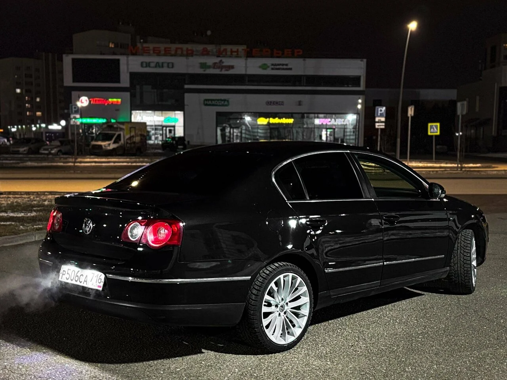
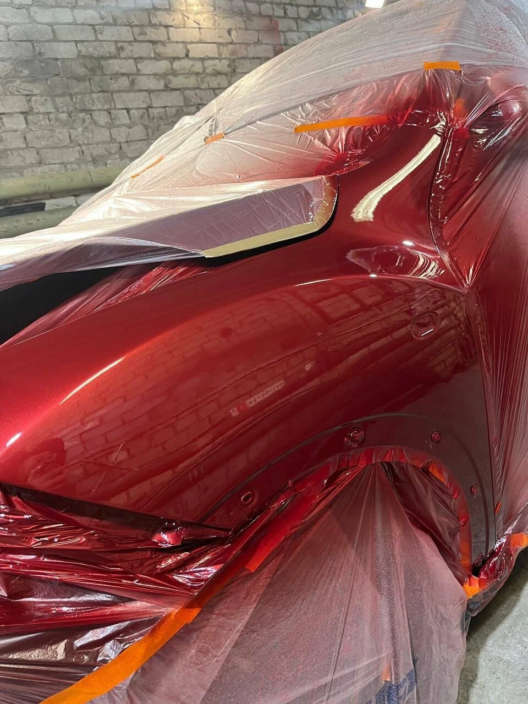

01
Кузовной ремонт
Устраняем вмятины, царапины
и другие повреждения кузова.

Ремонт кузова, покраска
и удаление вмятин. Начнём с осмотра автомобиля.
Устраняем вмятины, царапины
и другие повреждения кузова.
Подбираем цвет и окрашиваем элементы автомобиля.
Удаление вмятин без покраски. Возможность ремонта определим после осмотра.
Сварочные работы по кузову. Необходимый объём обсудим при осмотре.

БАРАКАТСЕРВИС · КАЗАНЬ
Кузовной ремонт и покраска на Тэцевской, 183. Удаляем вмятины без покраски и выполняем сварочные работы. Позвоните, чтобы обсудить повреждения и договориться об осмотре.
Проверяем состояние кузова, оцениваем повреждения и обсуждаем ваши пожелания.
Подбираем необходимые работы и материалы, согласовываем объём.
Выполняем согласованные работы по кузову. Состав ремонта и сроки обсудим после осмотра автомобиля.
Казань, ул. Тэцевская, 183
Позвонить в мастерскуюПозвоните, чтобы согласовать время осмотра.